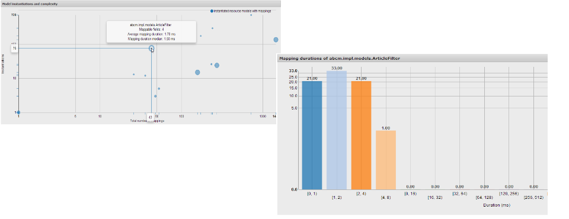
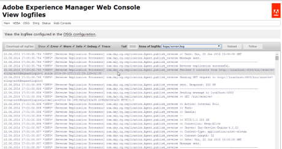

Main features
Resource models
Business logic in Sling is usually written for a specific kind of resource. However, the connection between the resource and it's model is usually problematic - either, code is directly used in views, introducing undesired coupling, or Adapter Factories are written, thus introducing complex system-level code in the domain specific implementations.Here, NEBA offers a simple, declarative way to write models for resources: The @ResourceModel annotation.
Once annotated, Java POJO's become Spring Beans representing specific resource types. Whenever a suitable resource is adapted to this model - or any of it's interfaces or super classes - the properties of the resource are automatically injected into the module. One can thus use the entire power of Spring and all of the Features of Sling and the JCR - with just one annotation:
{% highlight java %} @ResourceModel(types = "sling/resource/type") public class MyModel { @Inject private SomethingElse collaborator; private String slingProperty; } {% endhighlight %}
It is possible to write any number of resource models for any number of resource or JCR primary types. For an in-depth documentation of resource model features, see the user guide on @ResourceModels.Spring MVC
Sling has excellent support for writing Servlets and Scripts for resources. However, it does not provide you with an out-of-the box solution for parameter handling, validation, data binding and so forth, but instead offers well documented extension points. Spring, on the other hand, offers declarative creation of RESTful controllers. NEBA integrates Spring MVC in a conflict-free fashion. All Spring controllers are automatically available underneath /bin/mvc.do - a Sling servlet - and do thus not interfere with Sling's generic MVC concept for resource resolution. {% highlight java %} @Controller public class MyController { @RequestMapping("/something") @ResponseBody public String handle(@RequestParam String param) { return "redirect:/success.html"; } {% endhighlight %}All MVC features are supported - including first-class support for Sling specific request parameters such as the Resource resolver. For an in-depth documentation of the Spring MVC support, see the user guide on Spring MVC and the Spring MVC documentation.
@ResourceModel tooling
To view and analyze resource models, two Sling web console extensions are provided by NEBA.
The resource model registry allows exploring the registered models and their relation to the resource types to which they apply, as well as the types to which they can be adapted.

The resource model metadata console allows exploring the runtime behavior and complexity of resource models in real time.
Rendering beyond resources
NEBA integrates Apache Velocity to allow rendering beyond resources. This is useful when rendering things that are not resources -
for instance database or web service objects - repeatedly in your project. Furthermore, velocity can be used to render
objects outside the scope of a request.
For an in-depth documentation of the Velocity integration features and mapping support, see the user guide on velocity.
Monitoring and downloading log files
To let engineering analyze issue quickly, NEBA includes a Sling web console extensions that allows monitoring, tailing and downloading log files - including filtering and highlighting. Serial access to the machine running your instance is no longer required - authenticated access to the system does suffice.
